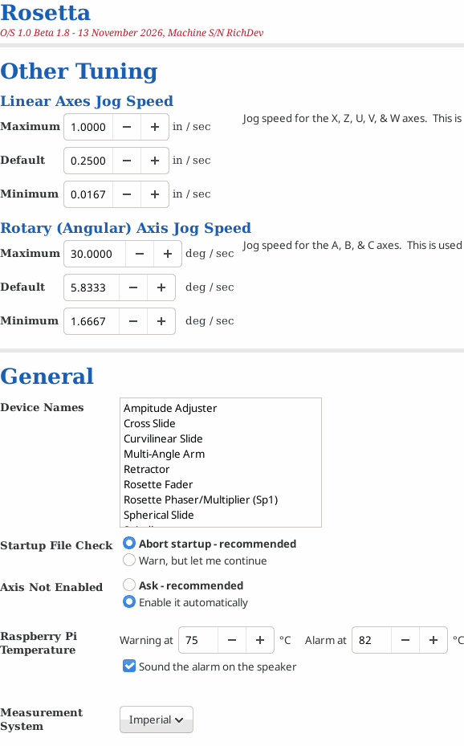

Key Note: The configuration program cannot be run when the Rosetta program is running. It is designed so that you configure the way Rosetta works, then run the system.

Other Settings
Other Tuning (Jog Speeds)
These are the speed options which can be used on the Manual Control / Jogging (F3) screen.
Use this to set the maximum, default, and minimum jogging speeds for
- Linear axes: Jog speed for the X, Z, U, V, & W axes.
- Rotary (Angular) axis: Jog speed for the A, B, & C axes.
These are used when moving under Manual Control [F3].
Linear jog speeds are in inches (or mm) per second, and rotary jog speeds are in degrees per second. The jog speed slider in Rosetta shows the same speeds per minute - for example, a Default of 5.8333 deg/sec shows there as 350 deg/min.
For each, the values must be in order:
A change that would break that order is not accepted - the field goes back to its saved value and a message explains why. To move a value further, change the others first (for example, raise the Maximum before raising the Default above it).
These changes are saved as soon as you make them, and take effect the next time Rosetta starts.
General
There are some general values which get set here.
Device Names
These get used for the selection fields on the main panel (to the right side). You enter them as one device name per line.

When using Save Subset of Settings from the Axis Selection screen, you can pick one of these names to label which physical device the exported axis' values belong to.
|
|
Startup File Check
When Rosetta is started, it checks to determine if you are using a reserved file name for a gcode program’s name.
This selection determines what happens if a reserved file name is found.
- Abort startup (the default) - LinuxCNC does not start until the file is renamed. This is the recommended approach as there are potential problems if a file with a reserved name is saved in the gcode directory.
- Warn, but let me continue - LinuxCNC starts anyway, once you close the warning. This is NOT recommended.
Note: A short sound plays if startup is aborted - see Sounds.
|
|
Axis Not Enabled
This dictates what happens when an activity is meant to move an axis or spindle, and that axis is not enabled (i.e., the ENA button is off / red). Those activities include:
- using the index operation,
- using the synchronized movement,
- using the cut thread operation, or
- running a Gcode program (when you click Run),
Without its ENA on, an axis stops with a Joint following error as soon as it has to move, and a spindle does not turn, so its index never finishes.
The options available for these scenarios are:
- Ask (the default) - a pop-up box names the axes which are not enabled, and offers two buttons:
- Enable ... and Run (on the main screen, Enable ... and Move) - turns those ENA buttons on, the same as clicking them, then carries on. This is the default button, so pressing Enter chooses it.
- Cancel - leaves them off, and nothing moves.
- Enable it automatically - the ENA buttons are turned on with no box, and Rosetta carries on. For a Gcode program, a short note in the bottom right corner of the LinuxCNC window says which axes were enabled.
Notes:
- If the system is set to automatically enable an axis when needed, that axis cannot be enabled if it is not configured for use. See also, Axis Selection.
- This choice is saved as soon as you make it, and takes effect the next time Rosetta starts.
|
|
Raspberry Pi Temperature
The Raspberry Pi is the small computer inside the Base Box that runs Rosetta and LinuxCNC. Like any computer it gets warm while it works, and it has a fan to keep it cool.
Its temperature is shown at the top of the main screen, beside the Rosetta logo (see Raspberry Pi Temperature). A Raspberry Pi that gets too hot slows itself down (near 85 °C), and that can cause a Joint following error or a lost-contact E-stop part way through a program. Rosetta warns you before it gets that hot:
- Warning at (default 75 °C) - the temperature turns orange, and LinuxCNC shows a notice in the bottom right corner of its window.
- Alarm at (default 82 °C) - the temperature turns red, a message box appears, and, if Sound the alarm on the speaker is ticked, an alarm sounds on the Pi's speaker.
Nothing is paused or stopped - a program carries on. Each warning appears once; it appears again only after the temperature has dropped a few degrees and risen again.
Notes:
- The Warning temperature must be below the Alarm temperature. If it isn't, Warning must be below Alarm - not saved. is shown, and nothing is saved until it is corrected.
- These choices are saved as soon as you make them, and take effect the next time Rosetta starts.
- For what to do when the Pi gets hot, see The Pi is warm or too hot.
|
|
Start Rosetta
Tick Start Rosetta when the computer starts and Rosetta opens by itself each time the computer is switched on, once the desktop has appeared - there is no need to click the Rosetta icon. This suits a machine used only for turning.
Untick it to start Rosetta from its desktop icon instead - for example, while the computer is mostly being used for something else.
Notes:
- This is saved as soon as you change it, and takes effect the next time the computer starts.
- If Rosetta was set to start this way by hand (in the desktop's Session and Startup settings), the tick box shows it, and unticking it switches that off too.
|
|
Measurement System
Select if you wish measurements to be performed using Imperial or metric values.
This is normally set once, when the machine is first set up, so it is the last item in this section.